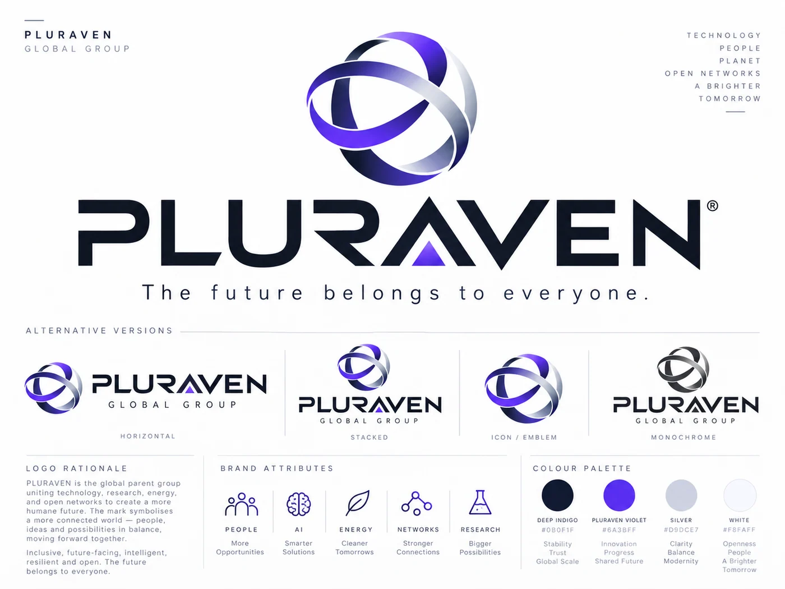
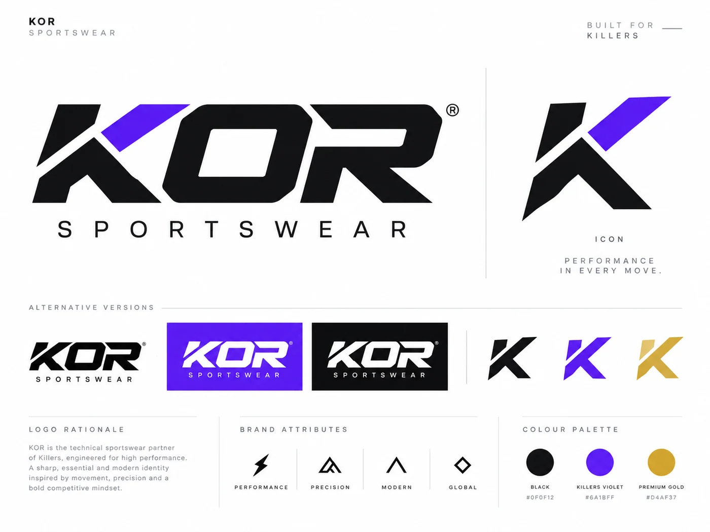
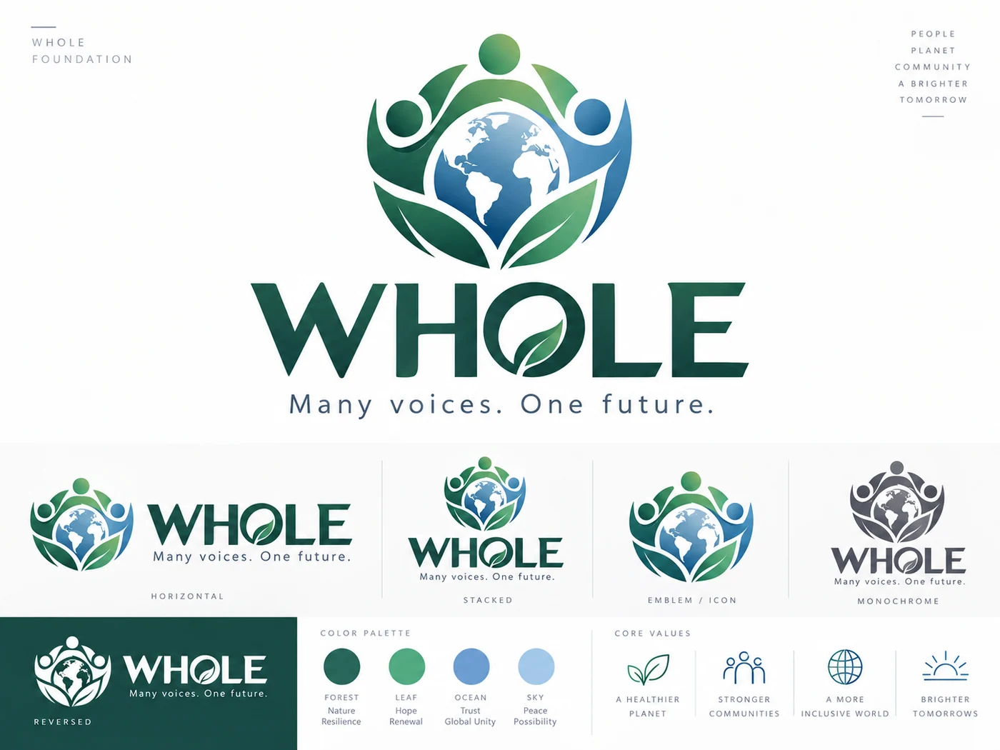

La continuità
Ciò che conta non vive soltanto negli archivi. Vive nei gesti, nelle battute, nei rituali e nelle storie che scegliamo di portare avanti.
Un universo parallelo in cui Marco, detto Sbirk, continua ad allenare i Gladiators. Non per cancellare ciò che è stato, ma per immaginare ciò che potrebbe ancora essere.
Nel mondo reale, il tempo segue una sola direzione. Nell'immaginazione possiamo aprire strade nuove: una stagione che ricomincia, un presidente che prepara l'asta, un allenatore che non rinuncia al proprio carattere.
Qui Marco è il presidente e allenatore dei Gladiators. I Killers conservano la propria storia, la rivalità e la complicità tra le squadre trovano nuove occasioni per esistere. Questa è una scelta narrativa, non una cronaca alternativa da confondere con i fatti.
La memoria custodisce. L'immaginazione continua.
Ciò che conta non vive soltanto negli archivi. Vive nei gesti, nelle battute, nei rituali e nelle storie che scegliamo di portare avanti.
L'immaginazione non deve chiedere il permesso alla realtà per esistere. Può costruire un campo nuovo senza cambiare il risultato di quello vecchio.
La tecnologia, lo sport e la solidarietà valgono quando moltiplicano le possibilità delle persone. Nessun futuro dovrebbe appartenere soltanto a pochi.
«L'identità non è soltanto quello che è stato. È anche ciò che scegliamo di continuare a immaginare.»
Testo editoriale originale del progetto Killers; non una citazione storica attribuita a Marco.
PLURAVEN, KOR e WHOLE sono organizzazioni immaginarie che traducono in tecnologia, sport e responsabilità collettiva alcuni valori di questo mondo.

Il futuro appartiene a tutti, non ai suoi proprietari.
Scopri l'organizzazione ↗
La tecnica trova la sua forma nello sport.
Esplora KOR ↗
Molte voci, un futuro condiviso. Una fondazione indipendente.
Entra nell'universo ↗Il mondo narrativo è una creazione immaginaria. La storia sportiva reale dei Killers e dei Gladiators resta documentata separatamente.